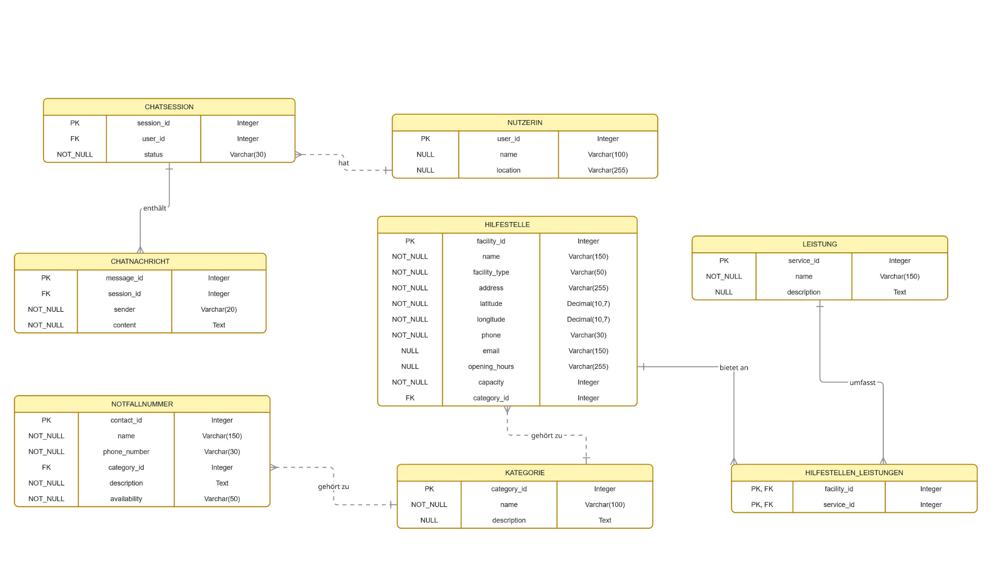

Datenmodell und PostgreSQL-Schema¶

Abbildung: ursprünglich von der Projektgruppe bereitgestelltes YANA-ER-Modell.
Grundlage¶
Das relationale Modell orientiert sich am im Projekt erstellten ER-Modell. Es umfasst acht Tabellen. Die Primärschlüssel der Stammtabellen werden automatisch über PostgreSQL-Identity-Spalten erzeugt. Die Zuordnung von Hilfestellen zu Leistungen ist eine n:m-Beziehung mit zusammengesetztem Primärschlüssel.
Tabellenübersicht¶
| Tabelle | Zweck | Primärschlüssel | Fremdschlüssel |
|---|---|---|---|
nutzerin |
Nutzerinnen (Testmodell) | user_id |
– |
chatsession |
Chat-Sitzungen | session_id |
user_id → nutzerin |
chatnachricht |
Nachrichten | message_id |
session_id → chatsession |
kategorie |
Hilfs-/Kontaktkategorien | category_id |
– |
hilfestelle |
Hilfsorganisationen und Standorte | facility_id |
category_id → kategorie |
notfallnummer |
Notfallkontakte | contact_id |
category_id → kategorie |
leistung |
Hilfsleistungen | service_id |
– |
hilfestellen_leistungen |
Zuordnung Hilfestelle ↔ Leistung | (facility_id, service_id) |
facility_id → hilfestelle, service_id → leistung |
erDiagram
NUTZERIN ||--o{ CHATSESSION : "hat"
CHATSESSION ||--o{ CHATNACHRICHT : "enthaelt"
KATEGORIE ||--o{ HILFESTELLE : "ordnet zu"
KATEGORIE ||--o{ NOTFALLNUMMER : "ordnet zu"
HILFESTELLE ||--o{ HILFESTELLEN_LEISTUNGEN : "bietet"
LEISTUNG ||--o{ HILFESTELLEN_LEISTUNGEN : "umfasst"Die Übersicht stellt die fachliche 1:n-Zuordnung vereinfacht dar. In der aktuellen Implementierung sind einige FK-Felder (user_id, session_id, category_id) NULL-fähig und die Datenbank erzwingt folglich nicht in jedem Fall eine tatsächliche Zuordnung.
Vollständiges Schema (IST-Implementierung)¶
Im pgAdmin-Query-Tool wurde folgendes SQL in der leeren Datenbank ausgeführt. Für erneutes Deploying ist es als Ausgangsschema zu verstehen: CREATE TABLE ohne IF NOT EXISTS schlägt bei bereits vorhandenen Tabellen fehl.
BEGIN;
CREATE TABLE nutzerin (
user_id INTEGER GENERATED BY DEFAULT AS IDENTITY PRIMARY KEY,
name VARCHAR(100),
location VARCHAR(255)
);
CREATE TABLE chatsession (
session_id INTEGER GENERATED BY DEFAULT AS IDENTITY PRIMARY KEY,
user_id INTEGER,
status VARCHAR(30) NOT NULL,
CONSTRAINT fk_chatsession_nutzerin
FOREIGN KEY (user_id) REFERENCES nutzerin(user_id)
);
CREATE TABLE chatnachricht (
message_id INTEGER GENERATED BY DEFAULT AS IDENTITY PRIMARY KEY,
session_id INTEGER,
sender VARCHAR(20) NOT NULL,
content TEXT NOT NULL,
CONSTRAINT fk_chatnachricht_session
FOREIGN KEY (session_id) REFERENCES chatsession(session_id)
);
CREATE TABLE kategorie (
category_id INTEGER GENERATED BY DEFAULT AS IDENTITY PRIMARY KEY,
name VARCHAR(100) NOT NULL,
description TEXT
);
CREATE TABLE hilfestelle (
facility_id INTEGER GENERATED BY DEFAULT AS IDENTITY PRIMARY KEY,
name VARCHAR(150) NOT NULL,
facility_type VARCHAR(50) NOT NULL,
address VARCHAR(255) NOT NULL,
latitude DECIMAL(10,7) NOT NULL,
longitude DECIMAL(10,7) NOT NULL,
phone VARCHAR(30),
email VARCHAR(150),
opening_hours VARCHAR(255),
capacity INTEGER NOT NULL,
category_id INTEGER,
CONSTRAINT fk_hilfestelle_kategorie
FOREIGN KEY (category_id) REFERENCES kategorie(category_id)
);
CREATE TABLE notfallnummer (
contact_id INTEGER GENERATED BY DEFAULT AS IDENTITY PRIMARY KEY,
name VARCHAR(150) NOT NULL,
phone_number VARCHAR(30) NOT NULL,
category_id INTEGER,
description TEXT NOT NULL,
availability VARCHAR(50) NOT NULL,
CONSTRAINT fk_notfallnummer_kategorie
FOREIGN KEY (category_id) REFERENCES kategorie(category_id)
);
CREATE TABLE leistung (
service_id INTEGER GENERATED BY DEFAULT AS IDENTITY PRIMARY KEY,
name VARCHAR(150) NOT NULL,
description TEXT
);
CREATE TABLE hilfestellen_leistungen (
facility_id INTEGER,
service_id INTEGER,
PRIMARY KEY (facility_id, service_id),
CONSTRAINT fk_hl_hilfestelle
FOREIGN KEY (facility_id) REFERENCES hilfestelle(facility_id),
CONSTRAINT fk_hl_leistung
FOREIGN KEY (service_id) REFERENCES leistung(service_id)
);
COMMIT;
Datentypen und Modellierungsentscheidungen¶
INTEGER GENERATED BY DEFAULT AS IDENTITY– automatische Vergabe einer fortlaufenden ID, manuelle Zuweisung bleibt möglich.VARCHAR(n)– begrenzt die Länge von Namen, Status und Kontaktfeldern.DECIMAL(10,7)– geografische Koordinaten als Dezimalzahlen, noch ohne PostGIS.TEXT– längere Beschreibungen und Nachrichten.NOT NULL– zwingend anzugebende Werte; Felder ohneNOT NULLsind optional.- Fremdschlüssel – sichern konsistente Verweise auf referenzierte Datensätze.
Testdaten (Entwicklungszwecke)¶
Für die erste API-Verifikation wurden zwei fiktive Kategorien, zwei fiktive Hilfestellen und zwei Leistungen eingefügt. Anschließend wurden die Hilfestellen und Leistungen über die n:m-Tabelle verknüpft:
BEGIN;
INSERT INTO kategorie (category_id, name, description) VALUES
(1, 'Frauenberatung', 'Beratungsangebote für Frauen'),
(2, 'Schutzunterkunft', 'Schutz und vorübergehende Unterbringung');
INSERT INTO hilfestelle (
facility_id, name, facility_type, address, latitude, longitude,
phone, email, opening_hours, capacity, category_id
) VALUES
(1, 'YANA Test-Beratungsstelle', 'Beratungsstelle',
'Musterstraße 1, Regensburg', 49.0134, 12.1016,
NULL, NULL, 'Mo-Fr 09:00-17:00 (Testdaten)', 10, 1),
(2, 'YANA Test-Schutzunterkunft', 'Schutzunterkunft',
'Teststandort, Regensburg', 49.0200, 12.0900,
NULL, NULL, 'Nur nach Vereinbarung (Testdaten)', 5, 2);
INSERT INTO leistung (service_id, name, description) VALUES
(1, 'Psychosoziale Beratung', 'Unterstützung und Beratung'),
(2, 'Schutzunterbringung', 'Vorübergehende sichere Unterkunft');
INSERT INTO hilfestellen_leistungen (facility_id, service_id) VALUES
(1, 1), (2, 2);
COMMIT;
Nur einmal in der leeren Datenbank ausführen. Die Adressen, Kapazitäten und Öffnungszeiten sind frei erfundene Testangaben, keine verifizierten realen Hilfsangebote. Reale Schutzunterkünfte dürfen nicht ungeprüft mit möglicherweise vertraulichen Adressen veröffentlicht werden.
Technischer Nachtrag: Da die Testdaten explizite IDs verwenden, kann beim nächsten Insert mit automatisch generierter ID die Identity-Sequenz hinter dem maximal vorhandenen Wert liegen. Vor weiteren Inserts sollte der aktuelle Sequenzstand geprüft und ggf. angepasst werden. Beispiel für die drei bislang manuell gesetzten Identity-Spalten:
SELECT setval(pg_get_serial_sequence('kategorie', 'category_id'),
(SELECT MAX(category_id) FROM kategorie), true);
SELECT setval(pg_get_serial_sequence('hilfestelle', 'facility_id'),
(SELECT MAX(facility_id) FROM hilfestelle), true);
SELECT setval(pg_get_serial_sequence('leistung', 'service_id'),
(SELECT MAX(service_id) FROM leistung), true);
Dies ist eine empfohlene Nacharbeit, nicht bereits bestätigter Einrichtungsschritt.
Fachliche und sicherheitsrelevante Weiterentwicklung¶
- Für Chatdaten fehlen noch Zeitstempel und ein differenziertes Rollen-/Löschkonzept.
- Standortdaten von Nutzerinnen können sensibel sein; Notwendigkeit und Speicherfrist müssen hinterfragt werden.
capacityist derzeit obligatorisch; das ist für Beratungsstellen möglicherweise nicht fachgerecht.- Öffnungszeiten werden aktuell als freier Text gespeichert.
- Filterung nach Nähe wird noch nicht implementiert; dafür sind präzise Datenvalidierung und ggf. Geodatenindexierung erforderlich.
- Das Datenmodell allein bildet keine Autorisierung ab. Authentifizierung und Berechtigungsregeln müssen im Backend implementiert werden.